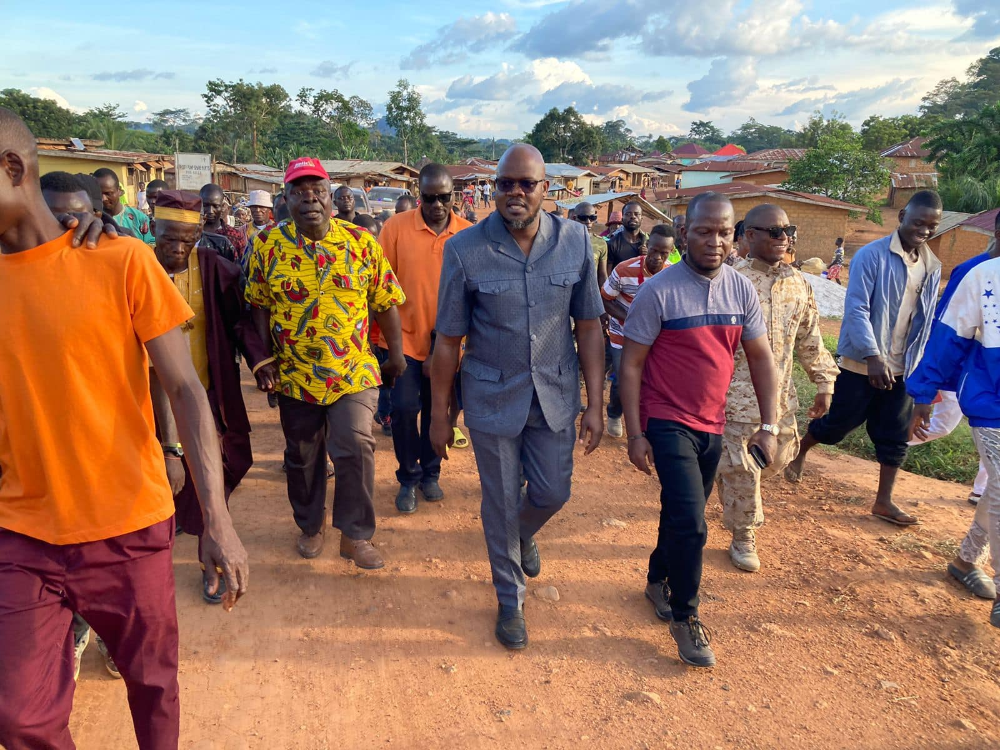

Nimba County • 55th Legislature
Serving Nimba
Building Liberia
The official website of Honorable Senator Nya D. Twayen, Jr – a tireless advocate for the people of Nimba County.
17
Districts Served
50+
Community Projects
100K+
Lives Impacted
Honorable Nya D. Twayen, Jr | Senator, Nimba County
A voice for Nimba
A Servant of the People
Honorable Senator Nya D. Twayen, Jr. serves the people of Nimba county with dedication and integrity. A son of the soil with strong roots in his community.
Senator • Liberian Senate
Foundation Chair
Senator
Liberian Senate
Foundation Chair
Nya D. Twayen Foundation
Policy Focus
Education, Health & Rural Dev
Public Service
20+ years of community work

Legislative Milestones
Sponsored bills for rural electrification, youth empowerment, and healthcare for elders.
Education ReformRoad Infrastructure
Nya D. Twayen Foundation
Scholarships, healthcare outreach, and small business grants across 17 districts.
Learn more"One Nimba, One Future"
Senator Twayen's message of unity and progress.
Upcoming Townhall: Sanniquellie – Dec 12